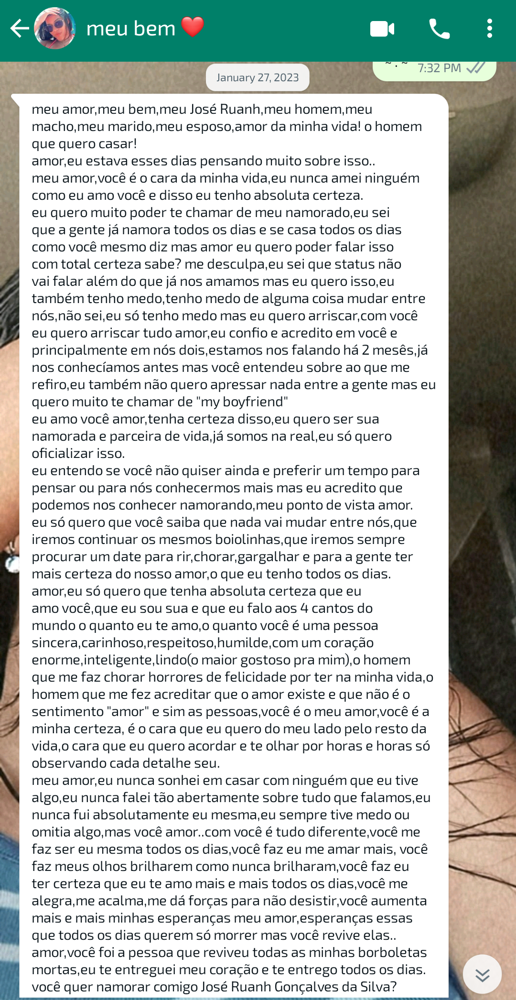

27 de Janeiro de 2023... o dia mais feliz da minha vida...

Sim! claro que eu quero namorar com você,
minha Josielle Ricarte!
Apesar de você brincar falando que foi você que pediu, eu já há muito pensara em te pedir em namoro. O que me faltava?
Coragem.
Mas não em relação a você... como você sabe, minha criação não foi muito das mais animadas no quesito: liberdade.
Então o medo era por conta da minha mãe. Sobre o que ela iria pensar, se iria apoiar, se iria brigar, se iria proibir... a mente do ansioso, bem, você conhece bem como funciona...
Mas namorar você era tudo que eu mais queria nesse mundo... ser teu, ter o seu amor, você ser minha companheira pra vida... que sonho esse meu de te ter do meu lado na vidoca. E amor... você deu um passo à frente. Sei que também não foi fácil pra ti, mas obrigado amor, obrigado por ter acreditado em nós dois.
Eu sempre te amei, Josielle Ricarte. Eu sempre fui completamente apaixonado por você...
E sempre sonhava em poder conversar contigo, falar sobre o seu dia, te ouvir reclamar das coisinhas e ser mais seu amigo...
Porque, sim, mais do que isso era algo surreal pra mim...
E o tempo foi passando e fomos conversando mais e mais e fomos nos aproximando mais e mais e mais. O carinho foi crescendo ainda mais, o amor foi crescendo ainda mais, e a vontade de te ter por perto aumentou mais e mais e mais e mais...
Aos poucos eu via que não conseguia mais passar um dia sem você, acordava e corria pra ver se tinha mensagem sua e ficava o dia todo de olho pra ver quando você me respondia...
Até que ambos tínhamos a mesma vontade, a vontade de estar perto um do outro, de ser muito mais do que apenas amigos. Logo o amor cresceu mais e mais, e a vontade de se ver cresceu junto.
Já tínhamos planos, desejos, metas... Mas o mais importante: tínhamos um ao outro desde sempre.
Começamos a namorar no dia 27 de Janeiro de 2023, mas já namorávamos há muito mais tempo. Já éramos o amor um do outro há muito mais tempo.
Agora somos mais que oficiais.
Depois disso tudo aconteceu mais rápido do que imaginávamos. Os planos, os desejos, as metas... um a um fomos realizando. Logo nos vimos, nos abraçamos, nos beijamos...
Dia 4 de fevereiro, uma semana depois do seu pedido, eu estava na sua casa. Nossos pais se conheciam e nós? nós dois nos encontramos novamente depois de tantos anos... décadas? vidas? Porque foi como se nos conhecêssemos há eras...
Dia 4 de fevereiro de 2023... nosso primeiro encontro, nosso primeiro abraço, nosso primeiro beijo. ❤
E nosso amor, nosso carinho, nossa intimidade foram só crescendo e crescendo mais e mais e mais... O meu melhor amigo é o meu amor. ❤
No momento em que escrevo isso, temos 3 meses de namoro, os primeiros 3 meses do restinho das nossas vidas. ❤
E muita muita muita muita coisa já aconteceu amor. Muitos momentos... Muitas lembranças... E é bom ver o quanto nosso amor só cresce. O quanto a nossa intimidade cresce. ❤
Sou muito feliz amor. Se hoje sou feliz, é por sua causa. Se hoje sou feliz, é porque tenho você na minha vida. Você é a minha vida amor. Sempre vai ser. Você é o amor da minha vida. ❤
Você é a mulher da minha vida!
Minha Josielle Ricarte Ferreira de Oliveira
Seremos pra sempre eu e você. ❤
Porque eu te quero comigo pro resto da minha vida ❤ e eu quero ser teu pelo resto da tua vida
E assim será.
Porque eu te amo a cada batida do meu coração
Eu te amo hoje, amanhã e pra todo o sempre
E até depois do pra sempre ❤